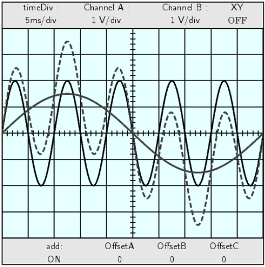

三角学(TRIGONOMETRY)#  内容 关于作者 前言 第 1 章 直角三角形 1.1 角 1.2 锐角的三角函数 1.3 应用与直角三角形的解法 1.4 任意角的三角函数 1.5 角的旋转与反射 第 2 章 一般三角形 2.1 正弦定理 2.2 余弦定理 2.3 正切定理 2.4 三角形的面积 2.5 外接圆与内切圆 第 3 章 恒等式 1. 基本三角恒等式 2. 和差公式 3. 倍角与半角公式 4. 其他恒等式 第 4 章 弧度量 弧度与角度 弧长 扇形的面积 圆周运动：线速度与角速度 第 5 章 图像与反函数 三角函数的图像绘制 三角函数图像的性质 反三角函数 第 6 章 附加主题 三角方程的求解 三角学中的数值方法 复数 极坐标 附录 A Chapter 1 Chapter 2 Chapter 3 Chapter 4 Chapter 5 Chapter 6 附录 B 使用 Gnuplot 绘图 打印与保存 GNU Free Documentation License History